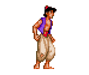
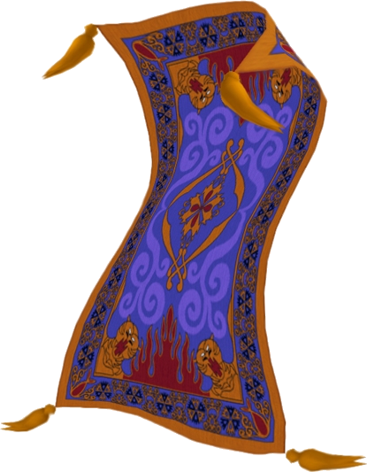
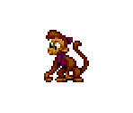
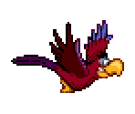
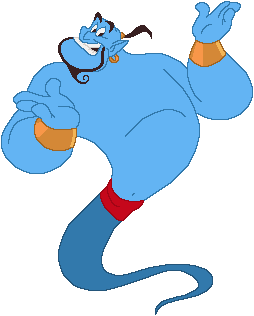
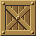

Aladdin - Sokoban Version
Overview: Welcome to the Sokoban version of Aladdin! After the events that occur in the first movie, where Aladdin defeats Jafar with the help of his friends, we all thought Aladdin would not face anymore adversity. Unfortunately, Jafar has escaped the confinements of the lamp, and has taken Aladdin’s friends! Help Aladdin rescue each of his friends from the hands and Jafar, and defeat him for once and for all.
How to play: In order for Aladdin to rescue his friends, he must first push all the boxes in the level to the designated areas marked by a X. However, he can only push one box at a time, so plan carefully where you want to push the boxes. Once you have helped Aladdin to push all the boxes to all the X’s on the board, one of his friends will be released. For level one, Aladdin must release his friend the Magic Carpet, and in level 6, Aladdin must rescue Princess Jasmine.
Types of Cells:

The player, you, will be Aladdin, the soon to be prince of Agrabah

The first friend Aladdin must rescue is the Magic Carpet in Level one

The second friend Aladdin rescues from the clutches of Jafar is Abu in Level two

Aladdin will then rescue Iago, the former pet of Jafar in Level three
Level four is where Aladdin must rescue Rajah, the favorite pet of Princess Jasmine

Level five, Aladdin must rescue the Genie, whose powers will help Aladdin to defeat the powers of Jafar
Level six, Aladdin must place all the boxes to rescue Princess Jasmine, his true love.

These are the boxes Aladdin must push on to the correct locations
These tiles mean that Aladdin can walk freely on the board.
Walls of course are the places where Aladdin can not walk.
This is where you, the player, must place the boxes on to. For every box on the screen, there will be the same number of targets.
This concludes our session! Good Luck and may the power of logic be in your favor!